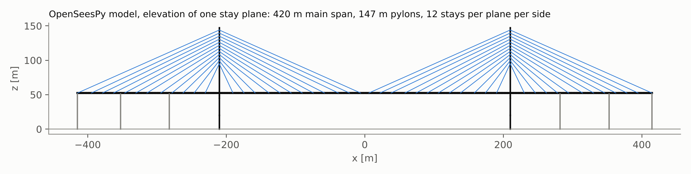
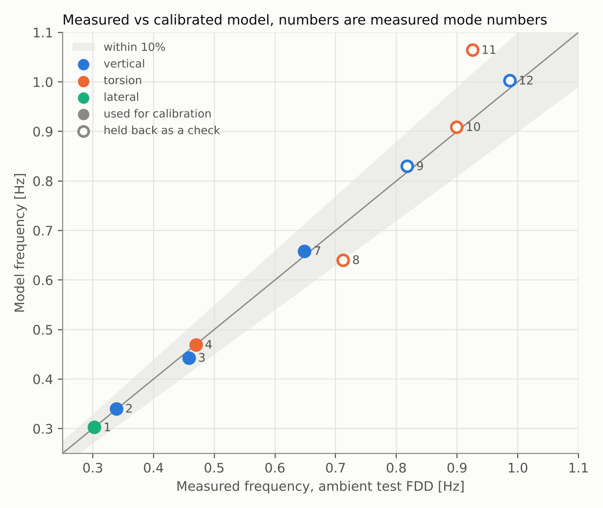
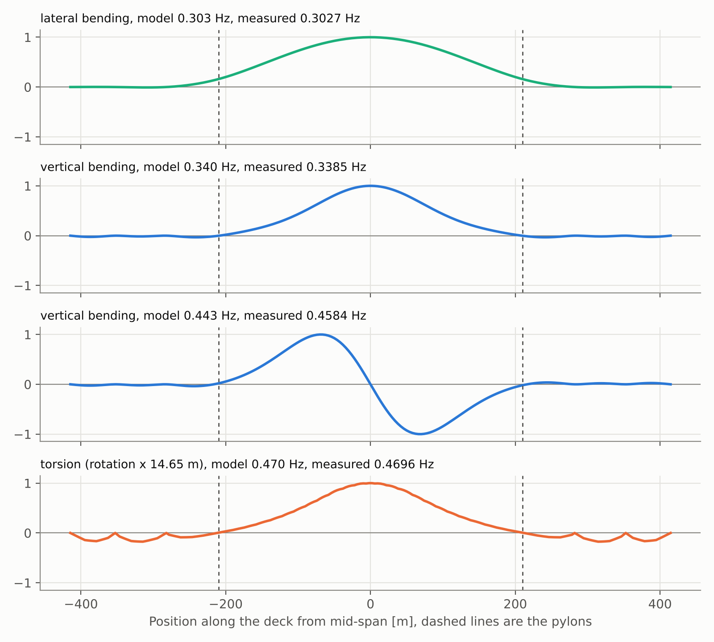

Vasco da Gama Bridge: a calibrated modal model
A simplified 3D OpenSeesPy model of the cable-stayed main bridge over the Tagus in Lisbon, tuned to the natural frequencies measured in a published ambient vibration test, then checked against higher modes it was not tuned to.
Why this bridge
It is my favourite structure and it is close to where I live. It is also a good test case for vibration-based assessment, the subject of my MSc research: a long, fully suspended, lightly damped deck whose modes were measured carefully and published, so a model can be checked against the structure itself rather than against another model.
What was done
- Built a spine model: the deck as one beam with rigid arms to the two stay planes, pylon legs and crossbeam as beams, 96 stays as truss members with the Ernst equivalent modulus for sag, bearings at the side-span piers, and elastic springs at the pylons standing in for the hysteretic dampers.
- Took the geometry from published descriptions. Section sizes that are not published were estimated and are listed in the code.
- Ran an eigen analysis, sorted the modes by what the deck does (lateral, vertical, torsion, longitudinal) and set aside local pylon modes that barely move the deck.
- Fitted five global parameters to measured modes 1, 2, 3, 4 and 7 by least squares, pairing modes by type and order because the measured mode shapes are not published as numbers.
- Compared the model with measured modes 8 to 12, which were not used in the fit.

Result

| Mode | Type | Measured FDD [Hz] | Free vibration [Hz] | Damping [%] | Model [Hz] | Error | Use |
|---|---|---|---|---|---|---|---|
| 1 | lateral | 0.3027 | 0.295 | 1.23 | 0.303 | +0.0% | calibration |
| 2 | vertical | 0.3385 | 0.338 | 0.21 | 0.340 | +0.5% | calibration |
| 3 | vertical | 0.4584 | 0.456 | 0.23 | 0.443 | -3.3% | calibration |
| 4 | torsion | 0.4696 | 0.467 | 0.24 | 0.470 | +0.0% | calibration |
| 5 | not stated | 0.5929 | 0.591 | 0.34 | not used | ||
| 6 | not stated | 0.6197 | not used | ||||
| 7 | vertical | 0.6488 | 0.647 | 0.37 | 0.659 | +1.5% | calibration |
| 8 | torsion | 0.7123 | 0.707 | 0.78 | 0.640 | -10.1% | check |
| 9 | vertical | 0.8177 | 0.814 | 0.48 | 0.830 | +1.5% | check |
| 10 | torsion | 0.8993 | 0.909 | +1.1% | check | ||
| 11 | torsion | 0.9251 | 1.065 | +15.1% | check | ||
| 12 | vertical | 0.9865 | 0.982 | 0.74 | 1.003 | +1.7% | check |

Calibrated parameters
| Parameter | Value | Note |
|---|---|---|
| Deck concrete modulus | 45 GPa | 1.26 x the 36 GPa start value |
| Stay areas | 1.45 x dead-load sizing | dead-load stress about 515 MPa, 0.28 of strand strength |
| Deck mass moment of inertia | 0.80 x estimate | radius of gyration about the deck axis reduced accordingly |
| Deck lateral stiffness | 0.27 x full section | also absorbs the transverse spring, see limitations |
| Longitudinal damper stiffness | 125 MN/m per pylon | elastic stand-in for the hysteretic dampers |
Limits, read before using any number
- This is not the design model. Section properties, stay areas and pylon sizes are estimates, and the five fitted parameters absorb every other modelling error, so they are effective values, not measured properties.
- Five parameters fitted to five frequencies fit them almost exactly by construction. The meaningful evidence is the held-back check, and there torsion modes 8 and 11 are off by about 10 and 15%. Mode 11 involves large pylon movement in the test, which this simple pylon cannot represent.
- The lateral stiffness factor and the transverse spring trade off against each other; one lateral frequency cannot separate them. The low lateral factor should be read as a combined effect.
- Pairing by type and order is weaker than pairing by mode shape (MAC). With measured shapes as numbers, a MAC check would be the next step.
- The model has a longitudinal deck mode near 0.40 Hz that the paper does not report, and local pylon modes near 0.40 and 0.47 Hz that move the deck very little. Whether these exist on the real bridge at these frequencies is not known from the source.
Next
Use the calibrated model as the baseline for damage detection: introduce stiffness loss in a girder segment or a stay and see which frequencies and shapes move enough to be measured above the environmental scatter reported for bridges of this kind.
Sources
- E. Cunha, E. Caetano, R. Brincker, P. Andersen, Identification from the natural response of Vasco da Gama Bridge, IMAC-XXII, 2004. Measured frequencies and damping, test layout, structural description. Numbers are cited as facts; the paper itself is not reproduced here.
- Vasco da Gama Bridge, Wikipedia, for general facts.
- OpenSeesPy, the analysis software.